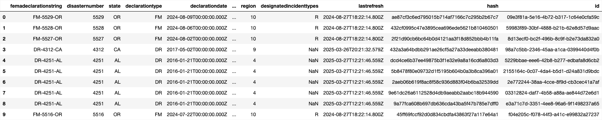
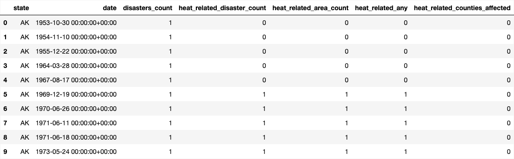
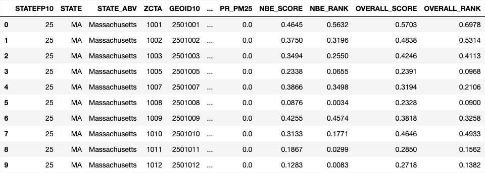
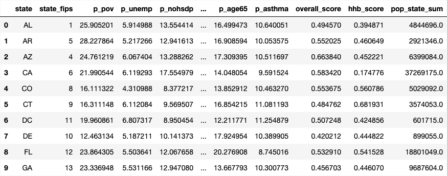
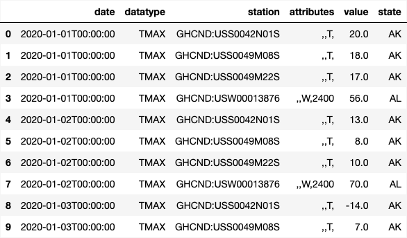
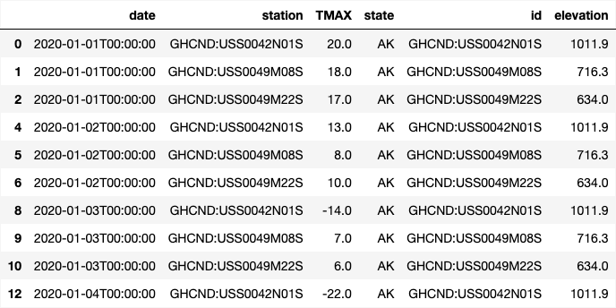

FEMA Disaster Declarations
Method of Collection
We downloaded the FEMA disaster declarations summary dataset as a CSV file. Because the raw FEMA file contains multiple rows per disaster (often one per designated area/county), we transformed it into a state-by-day feature table that can be safely merged into the station-day NOAA data.
Relevancy to Our Research
FEMA declarations provide a hazard/disruption context that can be joined temporally and geographically (state-day). While declarations do not cause temperature, they help quantify co-occurring events and impacts that may align with extreme conditions and can enrich the analysis.
Before Cleaning

After Cleaning

CDC's HHI (Heat/Health Burden & vulnerability indicators)
Method of Collection
We used the provided HHI dataset (2024 U.S.) containing heat-health burden indices and socio-demographic and built-environment indicators. The raw file is at a ZIP/ZCTA geography; to merge cleanly with station-day NOAA rows without reverse-geocoding, we aggregated HHI to a statelevel table (one row per state).
Relevancy to Our Research
HHI indicators supply static geographic features related to vulnerability and the built environment (e.g., impervious surface, tree canopy, poverty, age structure) that are useful for explaining spatial patterns and can improve model performance by capturing place-based differences.
Before Cleaning

After Cleaning

NOAA Daily Weather (GHCND)
Method of Collection
We used the NOAA Climate Data Online (CDO) API to retrieve daily maximum temperature (TMAX) observations for a curated set of U.S. weather stations. To avoid non-U.S. stations returned by broad geographic queries, we collected stations state-by-state using state FIPS location identifiers, then sampled a small number of stations per state. We then pulled TMAX for years 2020-2024 using batched station requests to reduce API overhead. The resulting table is our base dataset with one row per station per day.
Relevancy to Our Research
TMAX directly measures daily temperature extremes and supports both descriptive spatial/temporal analysis and supervised learning to predict extreme-heat days.
Before Cleaning

After Cleaning
